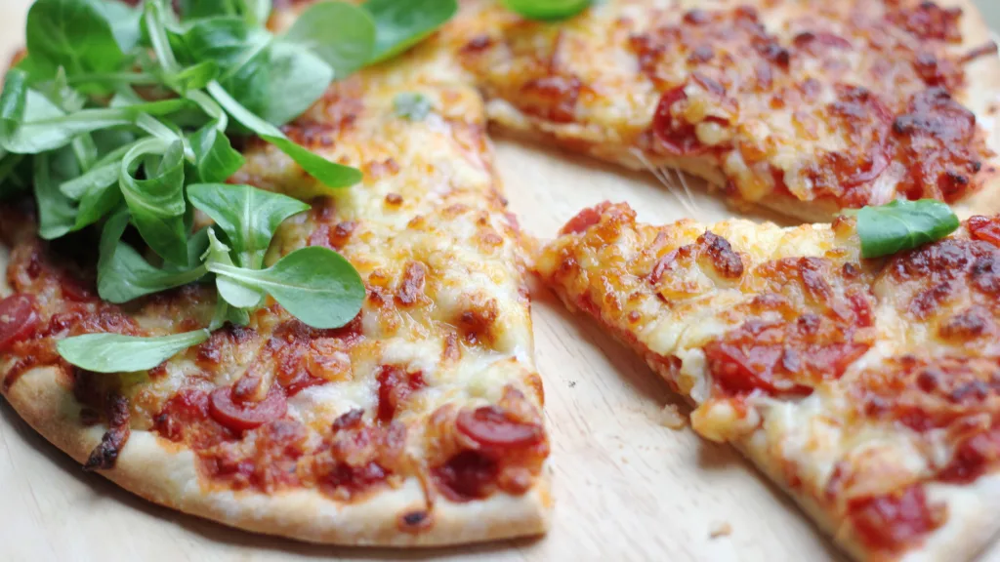

Pizza

Description
Pizza is made by first preparing the dough. Then you must knead the dough and let it rise.
Next you will place it on a pan and pat it into a circle. Now you can add any sauce and toppings
you would like. Toss it into the oven, let it bake, and enjoy your delicious pizza.
Ingredients
- 2.5 cups flour
- 1 tbsp salt
- 0.5 tbsp pepper
- 1 tbsp sugar
- 1 tbsp fast rise yeast
- 1 cup water
- 1 tbsp oil
- 0.5 cup tomato sauce
- 1 tsp italian seasoning
- 0.5 tsp garlic powder
- 1.5 cups pepperoni slices
- 2 cups shredded cheese
Steps
- In large bowl, mix flour, salt, sugar, and yeast.
- Mix water and oil, add to flour mixture.
- Knead for 2 minutes on floured surface.
- Roll in grease bowl. Cover and let rise for 20 minutes.
- Punch down, place on greased pizza pan, and pat into a circle.
- Mix tomato sauce with italian seasoning, garlic powder, salt, and pepper.
- Spread sauce and pepperoni slices evenly.
- Sprinkle shredded cheese and bake at 400 degrees for 20 minutes or until light brown.